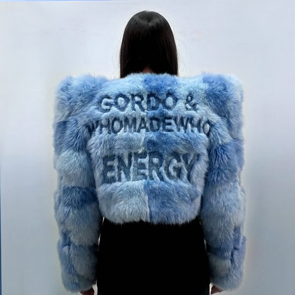
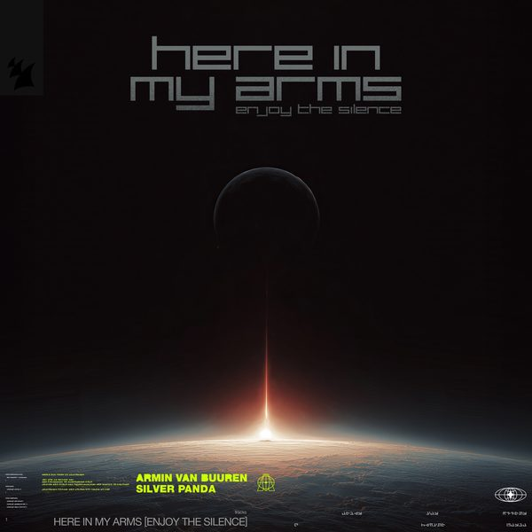
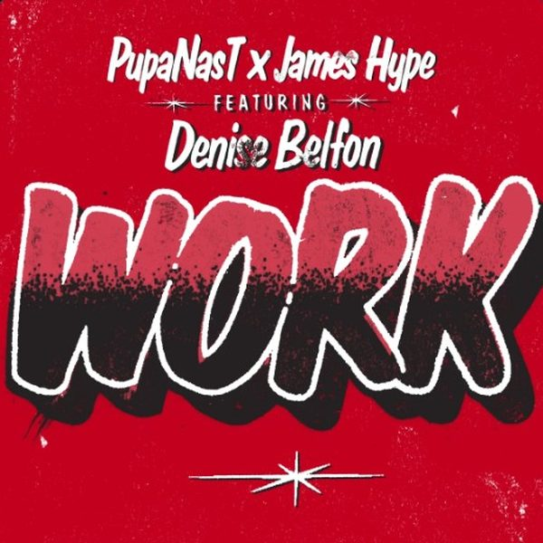
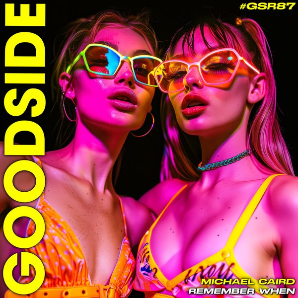
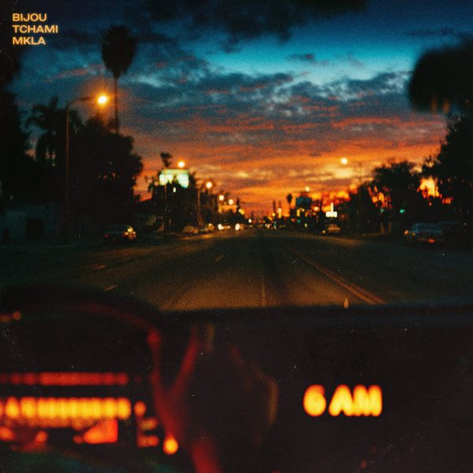
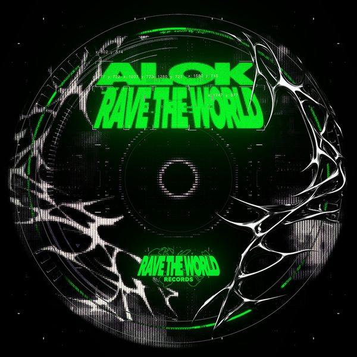
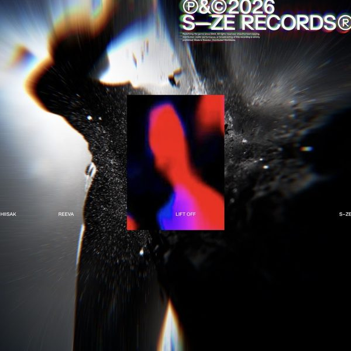
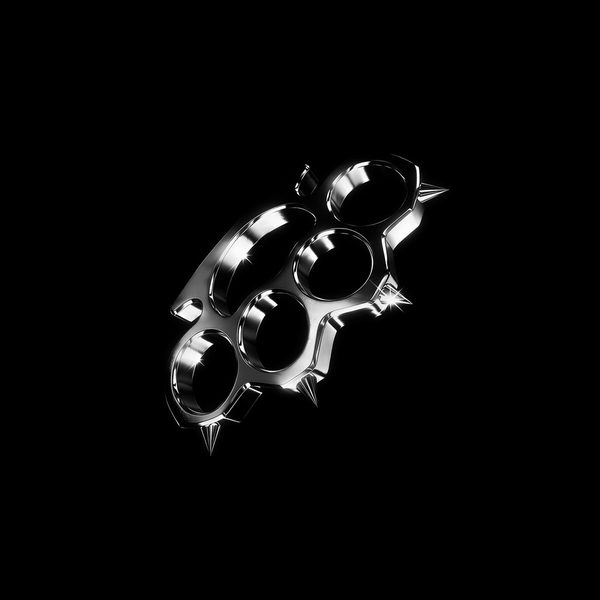
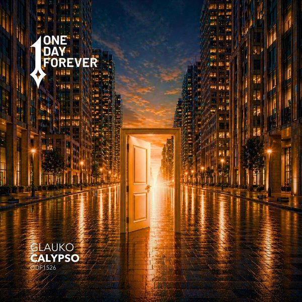

I 18 dischi e le top 6

1 ENERGYGORDO & WhoMadeWho 2
Waves Of LuvMatt Sassari, Mont Rouge
3
Touch My BodyBuja (BR)
2
Waves Of LuvMatt Sassari, Mont Rouge
3
Touch My BodyBuja (BR)
 4
Corazón LegendarioGerardo Corona
4
Corazón LegendarioGerardo Corona
 5
La MexicanaKarlos Kastillo, Allain Espino, DJ Crown
5
La MexicanaKarlos Kastillo, Allain Espino, DJ Crown

6 Here In My Arms (Enjoy The Silence)Armin van Buuren & Silver Panda
7 WorkPupanast x James Hype featuring Denise Belfon 8
SambaJose Uceda
8
SambaJose Uceda

9 Remember WhenMichael Caird
10 6amBijou x Tchami x Mkla
11 AroundAlok 12
Steppin'Vluarr
12
Steppin'Vluarr
 13
BootyMister Gray
13
BootyMister Gray

14 Lift-OffHiisak x Reeva 15
Fade AwayRob Laniado
15
Fade AwayRob Laniado

16 SyndicvteRasster
17 CalypsoGlauko 18
DesireGaddi
18
DesireGaddi
La tracklist
- 1 ENERGY GORDO & WhoMadeWho Maison Arts
- 2 Waves Of Luv Matt Sassari, Mont Rouge Cr2 Records
- 3 Touch My Body Buja (BR) AETERNA Records
- 4 Corazón Legendario Gerardo Corona Kryked
- 5 La Mexicana Karlos Kastillo, Allain Espino, DJ Crown Latin Rhythms
- 6 Here In My Arms (Enjoy The Silence) Armin van Buuren & Silver Panda Armada Music
- 7 Work Pupanast x James HypefeaturingDenise Belfon Disorder Digital Drum
- 8 Samba Jose Uceda Sugarstarr Traxx
- 9 Remember When Michael Caird Goodside Records
- 10 6am Bijou x Tchami x Mkla DND RECS
- 11 Around Alok RAVE THE WORLD
- 12 Steppin' Vluarr STMPD RCRDS
- 13 Booty Mister Gray Mondo Music
- 14 Lift-Off Hiisak x Reeva SIZE Records
- 15 Fade Away Rob Laniado ROMÉ RECORDS
- 16 Syndicvte Rasster SABOTAJ
- 17 Calypso Glauko One Day Forever
- 18 Desire Gaddi Catch & Release